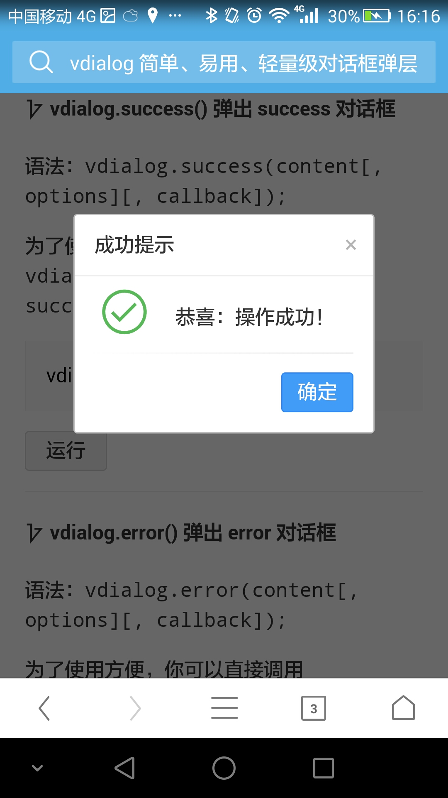

基于 HTML5 Dialog API 的优雅对话框组件

为何而生？
不久的将来，各大浏览器都会对 HTML5 的 dialog 标签给予支持，就目前来看，只有 chrome 做到了。但遗憾的是，即便这样，最终 dialog 呈现给用户的对话框，像是一个鸡肋：扩展性弱、界面不美观、易用性不高
HTML5 Dialog Element : http://www.w3.org/TR/2014/WD-html51-20140617/interactive-elements.html#the-dialog-element
非常庆幸，vdialog 可以在 HTML5 规范的指导下，完成类似的工作，并且做的优雅、漂亮！
vdialog 是在 HTML5 的基础上，对原生 dialog 标签的不足进行弥补和加强，而推出的一款轻量级 JavaScript 对话框弹层组件。
适用场景
vdialog 适用于 PC、H5 等各种 web 应用场景，对各种浏览器进行了严格的测试，能够完美兼容。
轻量简单
加上注释也不过几百行，压缩后仅仅 3k（gzip），vdialog 就是这样一个神奇的东西。
我们一起来看一下，vdialog 的简单之处在哪里呢？
vdialog({
title: '你好',
content: '我是一个脱俗的 vdialog 对话框',
ok: true
}).showModal();你只需简单地配置几个属性，就能将一个体验极好的对话框展现给用户，是不是很容易上手呢？
优雅极致
vdialog 的另外一个特点就是，几乎所有的属性同时也可以当成方法来用，开发者可以根据自身的需要，任意控制对话框：
vdialog({
title: '你好',
content: '我是一个脱俗的 vdialog 对话框',
time: 3
});
// 如果你愿意，还可以这么写：
vdialog({
title: '你好'
}).content('我是一个脱俗的 vdialog 对话框').time(3); 开放神秘
vdialog 遵循（开源协议中最宽松的）MIT 协议，可以根据你的需要任意使用、修改、传播。
vdialog 有许多奥妙之处，它的优雅，取决于你的玩法，等你逐个发现。
现在已给足你喜欢它的理由，如果你感觉 vdialog 有意思，赶紧开始上手并应用于你的项目中吧！